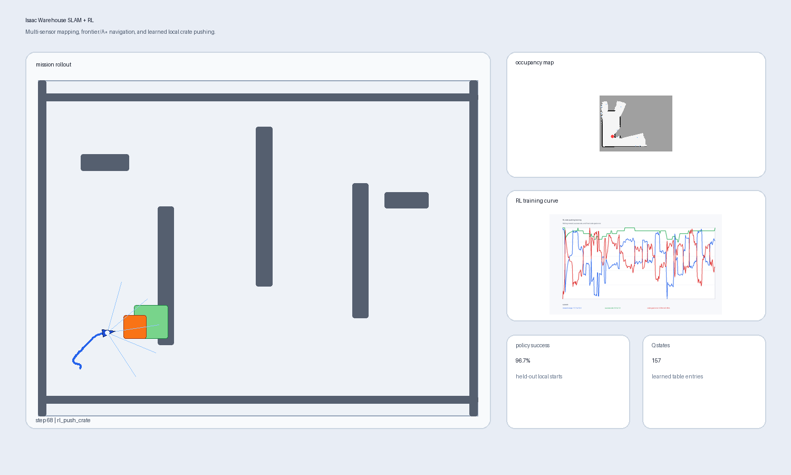
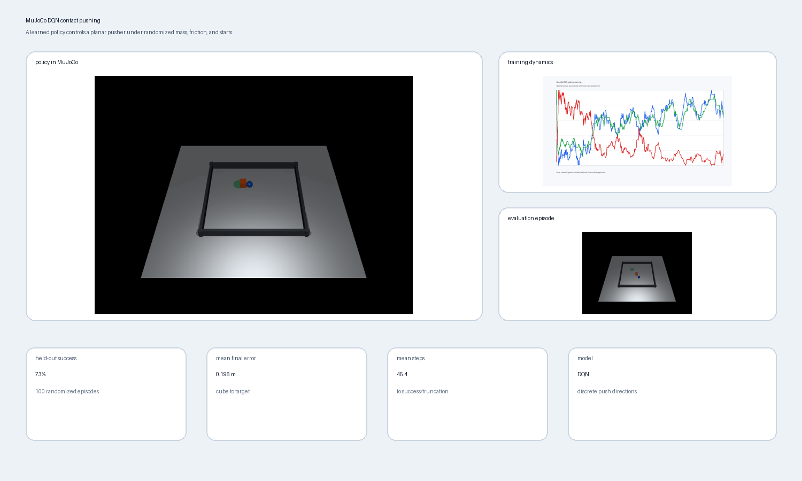
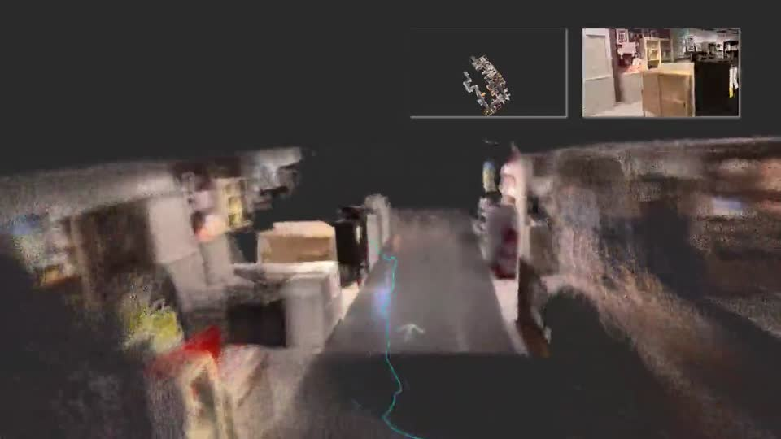

Featured
Photo
Depth
STL
AI fabrication
3D Print a Picture
Full-stack pipeline that estimates depth from one photo, post-processes the
surface into a printable STL, previews the result, and transfers production files.
Sapiens Depth
Photo to STL
Featured
Full-stack product
Bottle Inventory
Installable inventory app with private bottle collections, photo-assisted label
recognition, value and volume tracking, and cocktail matching across devices.
Supabase RLS
AES-GCM bundles
Cross-device PWA
Featured
Realtime 3D reconstruction
RealtimeGaussian
Extended NoPoSplat into a video-to-Gaussian toolkit with custom inference,
interactive splat viewers, CUDA rendering benchmarks, and automated GCP deployment.
72 FPS renderer
Video to 3DGS
Cloud GPU workflow
View repo
Computational fabrication
JointLab STL Joint Editor
Browser-based Three.js tool that recognizes humanoid anatomy, segments an STL,
adds printable joints, collision-checks motion, and exports a rigged parts package.
Local mesh processing
3 joint mechanisms
ZIP + assembly JSON
Private prototype

Robot simulation
MuJoCo Robot Movement Lab
Two-link arm with analytic kinematics, joint-space PD control, trajectory
tracking, rendered rollouts, and quantitative movement metrics.
Mean error 0.0209 m
RMSE 0.0220 m
View repo

Autonomous perception
AV Perception Portfolio
Synthetic LiDAR-style BEV detection and tracking, plus a camera-LiDAR extrinsic
calibration lab for autonomous-vehicle perception practice.
F1 0.872
MOTA 0.748
RMSE 1.584 px
View repo

Generated 3DGS
Synthetic Multiview 3DGS
Prompt-to-multiview reconstruction experiments testing generated contact sheets,
Zero123++ views, and Nerfstudio Splatfacto metrics.
PSNR 27.91 eval-all
PSNR 19.22 holdout
SSIM 0.924
View repo

Isaac Sim autonomy
Warehouse SLAM + RL Crate Pushing
Multi-sensor warehouse robot combining occupancy-grid SLAM, frontier exploration,
A* navigation, and a learned local policy for pushing a crate to its goal.
96.7% policy success
157 Q states
Isaac Sim 6.0
View repo

Reinforcement learning
MuJoCo RL Contact Pushing
Custom contact-rich environment where a DQN policy controls a planar pusher under
randomized object mass, friction, target location, and start poses.
73% held-out success
0.1961 m final error
450 episodes
View repo
Quantitative research
Quant Research Portfolio
Fifteen reproducible studies spanning derivatives, market microstructure,
backtesting, risk, probability, and imperfect-information game solving.
15 projects
Seeded experiments
CI tested
View repo
LLM fine-tuning
Nemotron LoRA Experiments
Sanitized Kaggle research log covering LoRA SFT recipes, adapter diagnostics,
leaderboard evaluation, failed branches, and GPU-budget decisions.
0.85 public
0.84 private
Rank-32 LoRA
View repo
AI forensics
AI Image Forensics Comparison
Benchmarks generated-image detectors across ResNet, photometric proxies,
forensic features, and physics-guided score fusion.
SCP-Fusion
0.763 acc
0.836 AUC
View repo
Autonomy stack
Lattice Fusion Navstack
C++20 autonomy stack with EKF fusion, inflated costmaps, A* planning,
local trajectory rollout, lidar simulation, and mission metrics.
C++20
EKF + A*
CI tested
View repo
Embedded runtime
Cortex Guardian RT
Deterministic C++20 runtime primitives for autonomy nodes: scheduler,
watchdogs, bounded buffers, CAN packing, CRCs, telemetry, and faults.
No heap
Watchdogs
CAN + CRC
View repo
Isaac Sim robotics
Isaac Visual Servo Docking
JetBot docking demo where a CNN predicts target offset and visibility
from camera frames, then drives a closed-loop visual-servo controller.
Isaac Sim
CNN control
WSL setup
View repo
Frame selection
3DGS Frame Selection Benchmark
NCC, MSE, and SSIM filtering harness for Nerfstudio Splatfacto reconstruction experiments.
NCC sweep
PSNR 20.78 best reported
View repo
Interactive spatial web
Splat-to-Game Pipeline
Work in progress on turning Gaussian splats into browser scenes with controls, collision, and publishable demos.
View repo
Dynamic reconstruction
Dynamic Gaussian Splats
4D Gaussian splatting benchmark scaffold for dynamic scene rendering rather than one static model per clip.
View repo
Geometry extraction
Splat-to-Mesh Pipeline
Tools and notes for converting Gaussian splat reconstructions into meshes and measurable geometry.
View repo
Optimization
Splat Compression Lab
Experiments for pruning, quantizing, and streaming Gaussian splat assets.
View repo

3D reconstruction
LingBot-Map 3D Reconstruction
Streaming 3D reconstruction research code built around a geometric-context transformer, with browser-based viser demos and pretrained checkpoint support.

AI scheduling
Nokki - AI Scheduler
AI-powered course scheduling tool that parses outlines and Brightspace data into editable schedules.
Education automation
Purdue Transfer Lookup
Bot for querying Purdue transfer credit equivalencies, iterating school/state options, and exporting CSV or JSON reports.
View repo